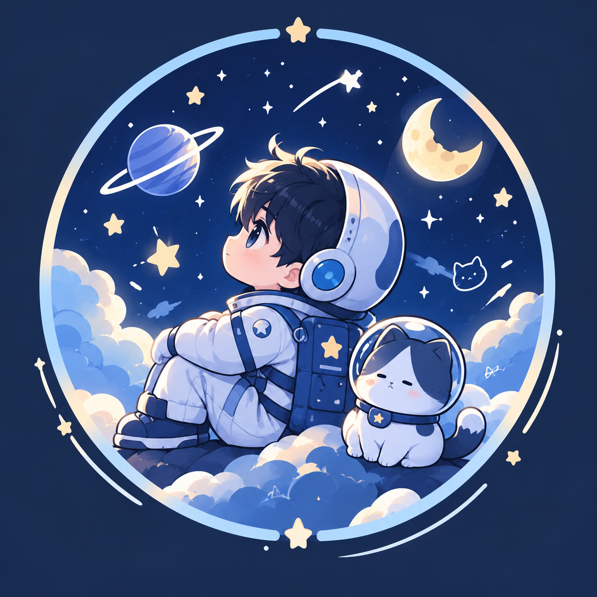

Exploring the Future 🚀
Syafei Alhizarroh Syafutra
akrab disapa Fei
Create yourself, don't wait to be found.
Student | Tech Enthusiast | Future Engineer
Temukan saya di sini
Pilih tempat yang paling nyaman buat kamu.
Proyek & portofolio
Beberapa hal yang pernah dan sedang saya bangun.